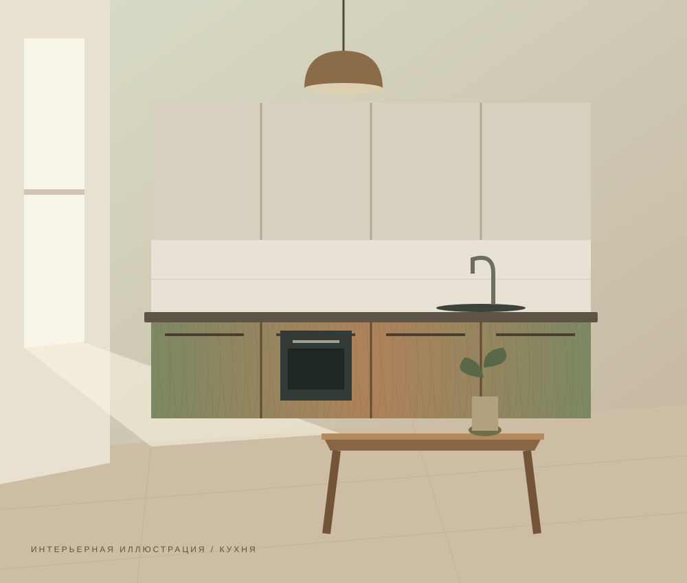
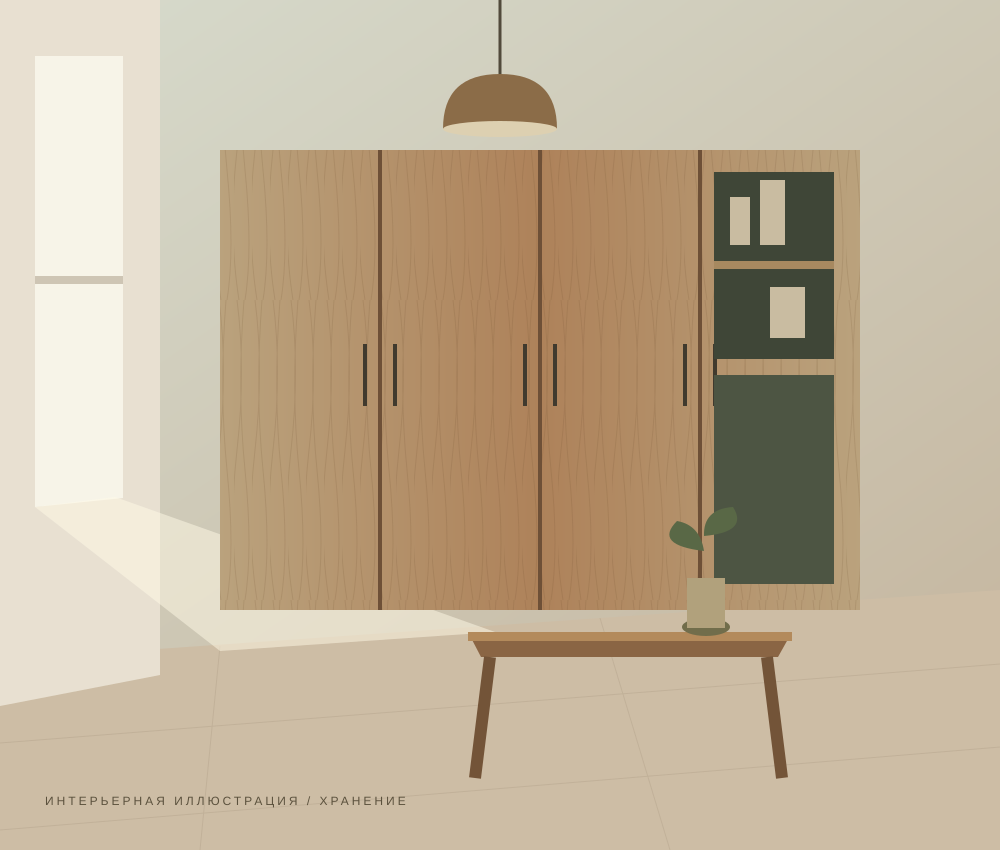
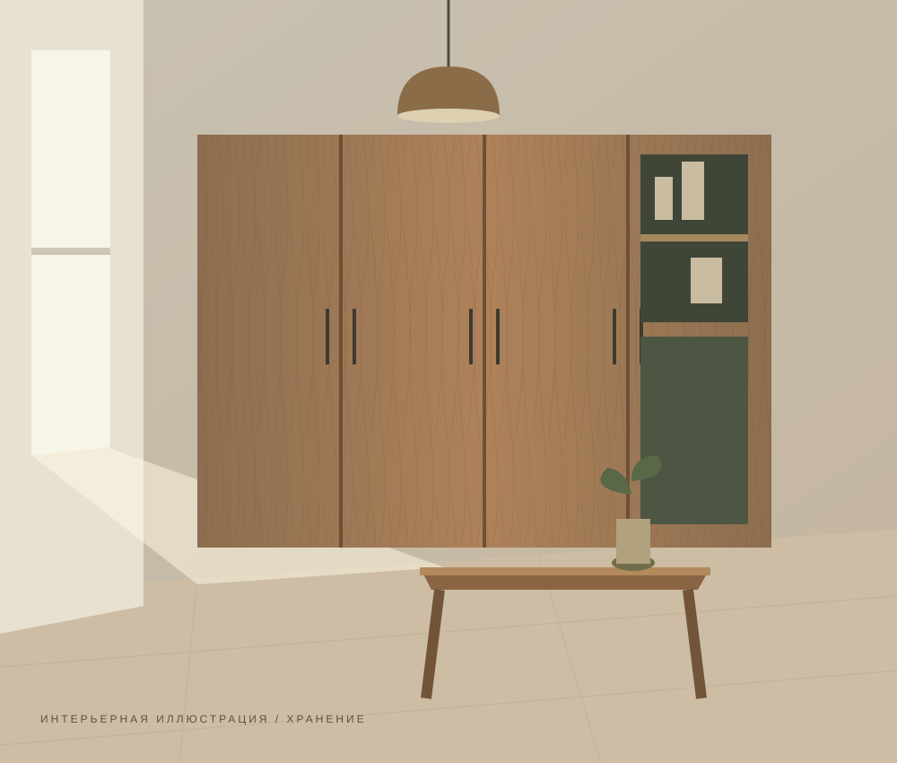

Простые линии. Тёплые материалы.
Мебель,
с которой
хорошо дома.
Кухни и системы хранения, задуманные под ритм вашего пространства. Интерьерная концепция вымышленной мастерской.
Найти свою форму
01 / Что создаём
Не просто предметы.
Часть вашего дома.
Три направления, одна идея: у каждой вещи есть своё место.

Кухни
От компактной линии до полноценного семейного пространства.
Пример оформления, не реальная работа заказчика
О направлении
Системы хранения
Закрытые секции и открытые полки в едином спокойном ритме.
Пример оформления, не реальная работа заказчика
О направлении
Жилые пространства
Мебельные композиции, которые объединяют интерьер.
Пример оформления, не реальная работа заказчика
О направлении02 / Подход к пространству
Меньше случайного.
Больше вашего.
Начать с привычек, а не с каталога. Продумать, где хранится посуда, как открывается шкаф и что хочется видеть каждый день.
Так устроен замысел этой мастерской. Все интерьеры на сайте нарисованы специально для демонстрации и не являются фотографиями выполненных заказов.
Посмотреть интерьерные концепции ↗03 / От идеи до деталей
Сначала — понять вас.
01. Знакомство
Как вы пользуетесь пространством, что нравится и чего не хватает.
02. Композиция
Расположение, материалы и детали складываются в общую концепцию.
03. Согласование
Фиксируются размеры, наполнение и состав будущего решения.
Начало истории
У вашего пространства
есть потенциал.
Здесь можно посмотреть демонстрационный сценарий обращения, без отправки данных.